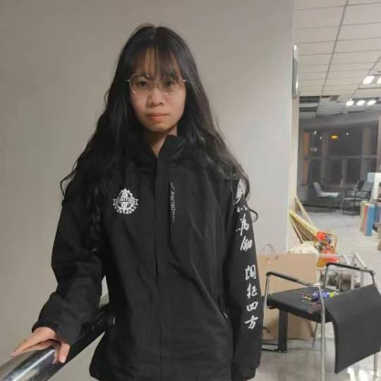
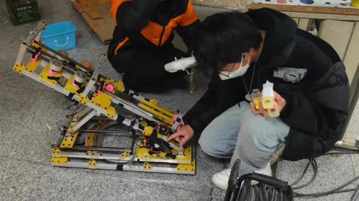
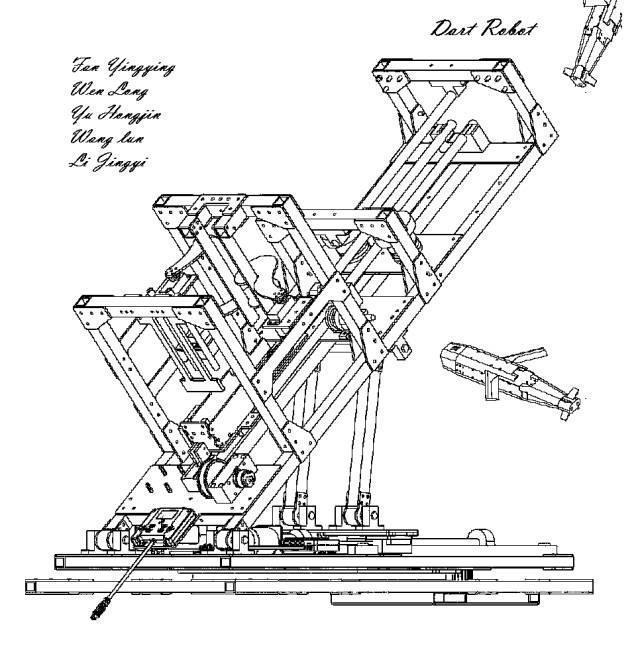

23赛季 | 飞镖组专访


飞镖机器人的攻击能力非常强大，每发飞镖可以对防御塔造成高达750点的伤害，只需要两发就可以摧毁前哨站，而四发则足以打残敌方基地。
此外，每发命中还会使敌方机器人陷入5-10秒的致盲状态，合理利用能够有效地打出团灭效果。因此，飞镖机器人在RM比赛中被认为是一种战略武器。
今天，我们有幸邀请了负责本赛季飞镖发射系统的两位成员进行采访，



于红槿，飞镖发射架电控负责人，本赛季承担飞镖调试工作。
苏展，原飞镖发射架维护负责人，承担本赛季飞镖的中期视频拍摄工作。
Vol.03


苏展：上学期的时候，飞镖有个摩擦轮发生了奇怪的问题，在高速情况下正常，在低速情况也正常，唯独在低高速转换情况下发生明显异响。当时为了检查问题，手握高速旋转的3508电机，老得劲了。

于红槿：飞镖是一种独特的兵种，与其他兵种相比，在比赛场上给予飞镖的时间很短。只有十几秒的时间，但在这短短的时间内，打中十六米外的前哨站或许能够扭转整个局势。

由于飞镖是一种新兴的兵种，队伍对其的研究相对较少。因此，我们只能在多次的实验中不断调整摩擦轮的参数，以及对飞镖架的物理限制来保证飞镖在发射时保持稳定，尽力减小误差。
同时，我们运用流体动力学的思想对镖体进行优化，以让飞镖能够飞得更远，更平稳。
苏展：寄！
于红槿：首先打一顿楼上↑这位姓苏的，希望飞镖能在测试中，展现出它能打中前哨站的能力，能在赛场中打中几发，便是我们的荣幸了！
排版 | 战空
文案 | 战空
图片 | 沈理电协
审核 | 恩嘉